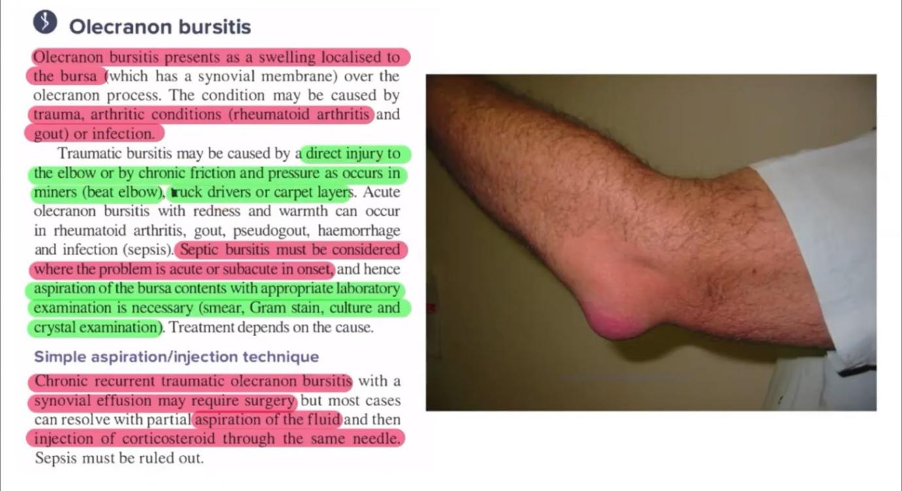

ELBOW PAIN
CASE STEM
Your next patient is a 30 year old man who has presented to your General Practice complaining of pain in his elbow.
Task:
- Take history for 6 minutes
- Physical examination will appear on the screen at 6 minutes
- Explain your diagnosis and differentials
DIFFERENTIAL FRAMEWORK
You must organise elbow pain into 4 groups
- Soft tissue
- Joint
- Red flags
- Referred pain
1. SOFT TISSUE
- Medial epicondylitis
- Lateral epicondylitis
- Olecranon bursitis
- Biceps tendonitis
- Osteochondritis
2. JOINT (ARTHRITIS)
- Osteoarthritis
- Rheumatoid arthritis
- Psoriatic arthritis
- Gout
- Inflammatory bowel disease–reactive arthritis
3. RED FLAGS
Malignancy
- Bone tumors
- Metastasis
- Lung cancer
- Pancost tumor
Infections
- Septic arthritis
- Osteomyelitis
- Cellulitis
4. REFERRED PAIN
- Cervical radiculopathy
- CVS: Ischemic heart disease
- Respiratory (pancoast tumor)
- Upper limb DVT (acute effort thrombosis)
HISTORY-TAKING STRUCTURE
1. INTRODUCTION
Doctor
“Hi, my name is Amir. Can you tell me more about your elbow pain today?”
Patient
“Doctor, I’ve had pain for a few days, it’s at the back of my elbow and it’s getting worse.”
Empathy
“I’m sorry to hear that. I understand your concern. I’ll ask you a few questions and try to find the cause.”
2. CHARACTERISTICS OF PAIN
Site
- Front / back / side of elbow
Intensity
“On a scale of 1 to 10?”
Quality
“Is it dull, sharp, burning?”
Onset (4 questions)
- When did it start?
- Is it constant or on and off?
- Is it getting worse?
- First episode or previous episodes?
Radiation
“Does it travel anywhere?”
Aggravating / Relieving
“What makes it better or worse?”
Affect on life
“How is this affecting your work and daily activities?”
3. PATTERN OF PAIN (Inflammatory vs Mechanical)
- Night pain
“Does it wake you up at night?”
- Morning vs evening
“Is it worse in the morning or later in the day?”
- Rest vs activity
“Is it worse after resting or after activity?”
4. GENERAL MUSCULOSKELETAL QUESTIONS
- Have u noticed any Swelling in elbow?
- Redness or rash?
- Stiffness?
- Trauma or injury?
5. RED FLAGS
Malignancy
- Weight loss
- Loss of appetite
- Lumps & bumps
- Fatigue
Metastasis
- Chronic cough
- Breast lump
- Urinary symptoms> do u have any problem with urination? > just 1 question
Infection
- Fever
- Chills
6. SOFT TISSUE QUESTIONS
Occupation
“What do you do for work?”
Repetitive wrist movement> condylitis
“Do you do repeated wrist or elbow movements?”
Pressure on elbow> bursitis
“Do you lean on your elbow for long periods?”
Exercise
“Any heavy lifting or sports?”
Osteochondritis
“Any locking of the elbow?”
Gout trigger
“Does red meat or alcohol trigger the pain?”
7. JOINT-SPECIFIC
Reactive arthritis / IBD
- Diarrhea
- Blood in stool
- Vaginal or penile discharge
- STI history: are you sexually active? Do you practice safe sex and use condom?
8. REFERRED PAIN
Cervical spine> cervical radiculopathy
- Any Neck pain>
- Shoulder pain
- Pins and needles
- Numbness
- Weakness in moving arms and hands
Cardiac
- Chest pain
- Shortness of breath on exertion
Respiratory (pancoast)
- Cough
- Hemoptysis: have you ever coughed up blood?
Upper limb DVT
- Have u had any recent Repetitive upper-limb movements
9. ENDING HISTORY
- Smoking
- Alcohol
- Drugs
- Medications (statins)
- Past medical history
- Family history
Lateral Epicondylitis (topic review)
- Occupation: Carpenter, cleaner, gardener, dentist
- Symptoms: Rest pain and pain at night, pain on gripping, picking up objects, turning door handles
- Signs: Pain on passive wrist flexion
- Pain on resisted wrist extension
History Findings
- Severe pain in his left elbow
- Bumped his elbow in the door knob
- Cant play golf
- Hx of gout attacks in his foot
- No other injuries
Physical Examination
- Tender fluctuant swelling on olecranon
- Limited elbow flexion
PROVISIONAL DIAGNOSIS
Olecranon bursitis

EXPLANATION TO PATIENT
“You most likely have a condition called olecranon bursitis.
A bursa is a cushion-like structure around the joint that absorbs pressure.
Repeated movements, direct pressure or injury can inflame it.
Your gout also increases the risk of bursitis.
On examination, the swelling and pain over the back of your elbow explains your pain.”